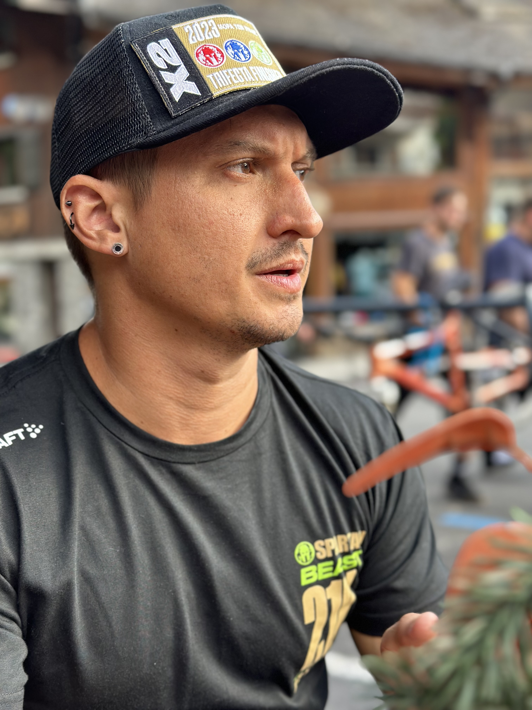

Suxi's Portfolio

Summary
I need to do more, hence why I'm always studying something
Education
Masters Degree in Electrotechnical Engineering from Instituto Superior Técnico in Lisbon, Portugal
Halfway through a certificate in Fitness and Conditioning from the Setanta Institute in Ireland
Obtaining my certificate as a Yoga instructor, Yoga Alliance
Learning Web Development as I have ideas I want to know how to make them
Experience
2012 - Present Data Analyst / Support Engineer at Gigawatt Moçambique S.A
Owned a bar from 2010 - 2013, was a bartender, accountant, stock manager, HR, Social events organizer, etc...
Skills
Besides having a passion for working out and trying to make it in the OCR world, I can:
Speak 4 languages
Program in god knows how many languages
Analyse data, and annoy a lot of people
Was a very good olympic level swimmer
Very very outgoing but extremely loyal
Certificates
Agile
Lean Six Sigma Black Belt
ISO 9001 Internal Auditor
Will update when I finish my current courses (Yoga, Personal Coach)
About Suxi
Contact Suxi